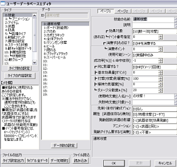
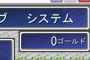
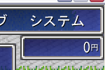
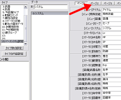
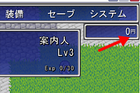

ユーザーデータベース
クリックしてください。
右のようなウィンドウが表示されます。

【目標】
お金の単位「ゴールド」を、「円」に変更します。
 「ゴールド」 |
→ . |
 「円」 |
| 【1】 ユーザーデータベース クリックしてください。 右のようなウィンドウが表示されます。 |
 |
| 【2】 ウィンドウが開いた直後は タイプが「技能」になっています。 スクロールバーを下に動かして 「15:ベースシステム設定」を 選択して下さい |
|
| 【3】 右上にある「ページ２」を 選択して下さい |
 |
| 【4】 「[ステータス]お金の単位」を 「ゴールド」から「円」に変更して下さい |
|
| 【5】 テストプレイ 「ゴールド」が「円」に変わりました！ |
 |
| 【余談】 その他の単語を変更する場合も 同様の方法で変更出来ます。 右画像では、「ページ１」で 「SP」を「MP」に変更しました。 |
|
＜執筆者：さくらば結城＞